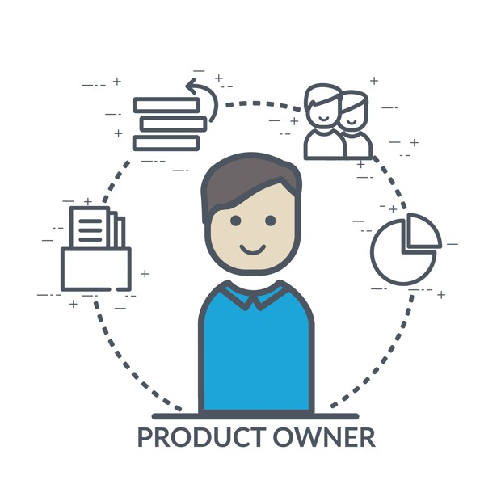

<nav class="navbar navbar-expand-lg navbar-light bg-light">
    <a class="navbar-brand" href="#"> Dynamix </a>
    <button class="navbar-toggler" type="button" data-toggle="collapse" data-target="#navbarSupportedContent" aria-controls="navbarSupportedContent" aria-expanded="false" aria-label="Toggle navigation">
    <span class="navbar-toggler-icon"></span>
  </button>

    <div class="collapse navbar-collapse" id="navbarSupportedContent">
        <ul class="navbar-nav mr-auto">
        </ul>
        <form class="form-inline my-2 my-lg-0">
            <span *ngFor="let item of itemArray">
                        <span *ngIf="item.email === myemail">


                                <div class="dropdown open">
                                        <button class="btn dropbtn dropdown-toggle" type="button" id="dropdownMenu5" data-toggle="dropdown" aria-haspopup="true" aria-expanded="false">
                         
                        <span class="img-avatar" *ngIf="item.role === 'Consultant' ">
                        
                       </span>

            <span class="img-avatar" *ngIf="item.role === 'Direction' ">
            
             </span>

            <span class="img-avatar" *ngIf="item.role === 'Clients' ">
            
              </span>

            <span class="img-avatar" *ngIf="item.role === 'Administration' ">
                    
                      </span> {{item.nom}} , {{item.prenom}}
            </button>

            <div class="dropdown-menu">
                <button class="dropdown-item" disabled>{{item.role}}</button>
                <div class="dropdown-divider"></div>

                <a class="dropdown-item" routerLink="/History"><i class="fas fa-history"></i>  Historique personnel</a>
                <a class="dropdown-item" routerLink="/Monrepos"><i class="far fa-laugh-beam"></i> Repos </a>
                <a class="dropdown-item" routerLink="/Account"><i class="fas fa-tools"></i> Paramètres</a>
                <a class="dropdown-item" (click)="logaout()"><i class="fas fa-sign-out-alt"></i> Se déconnecter</a>
            </div>
    </div>

    </span>
    </span>


    <div>
        <div>
            <div></div>
        </div>
    </div>
    <span class="badge badge-light">7 / 10</span>
    <span class="icon-notif" style="color:#fff"> <i class="fas fa-bell"></i></span>
    </form>
    </div>
</nav>